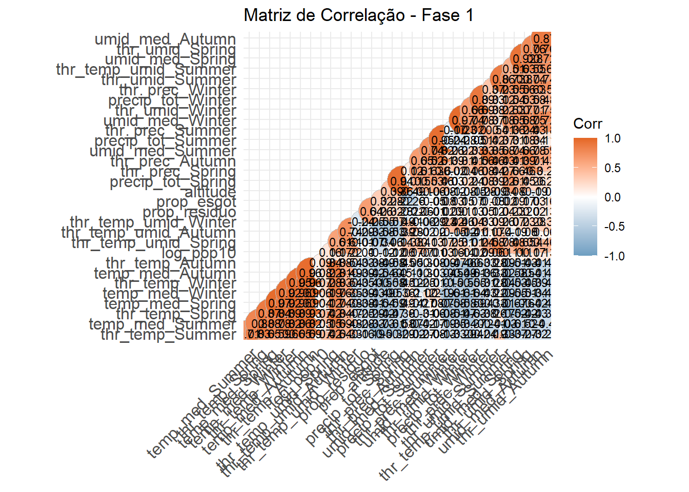
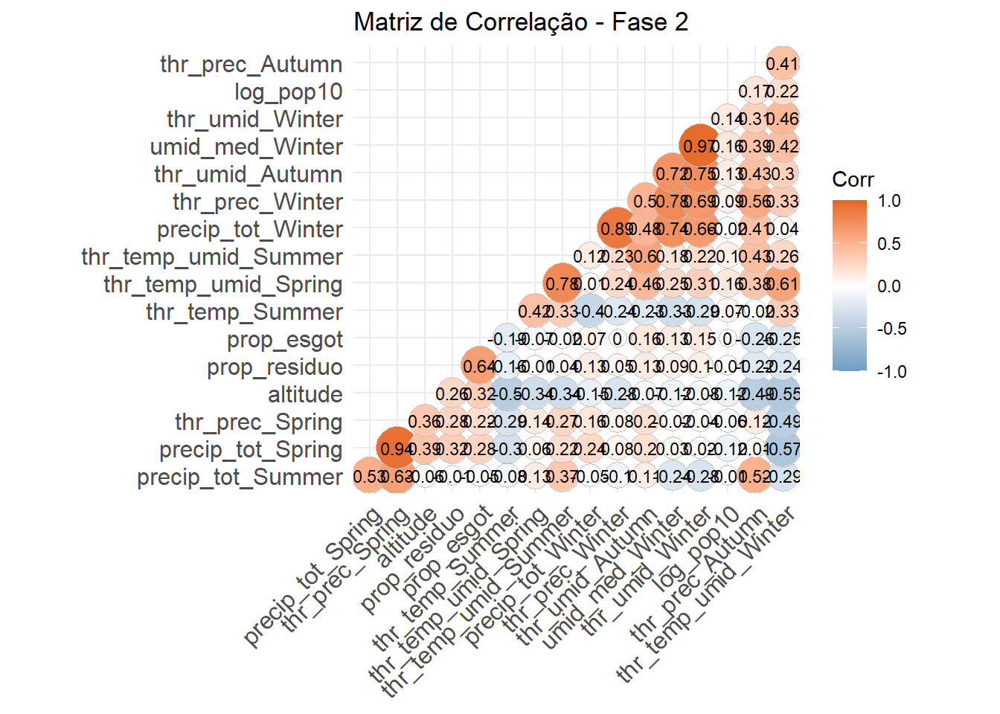
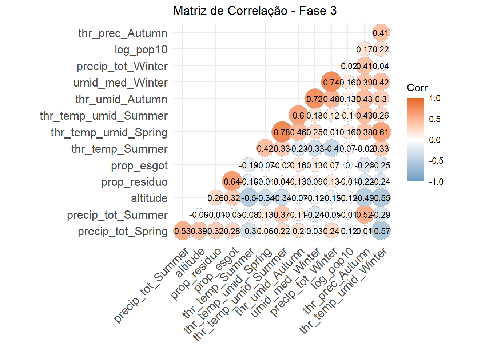
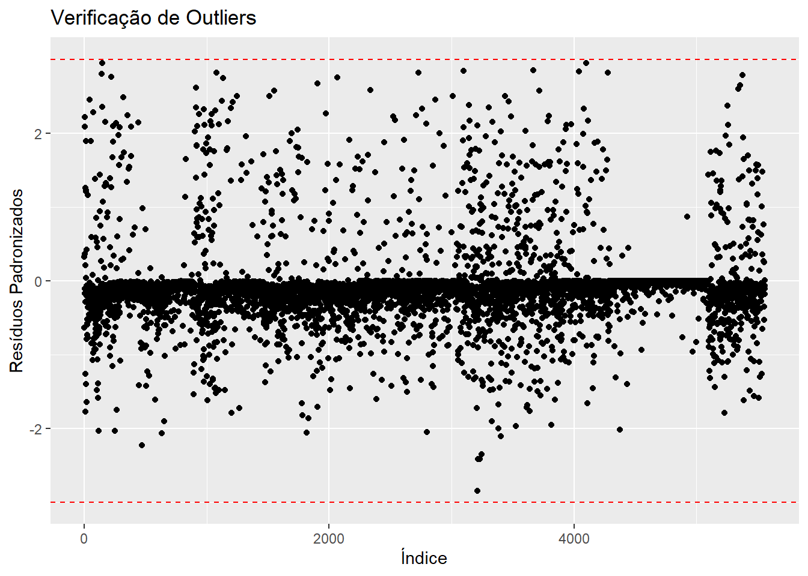
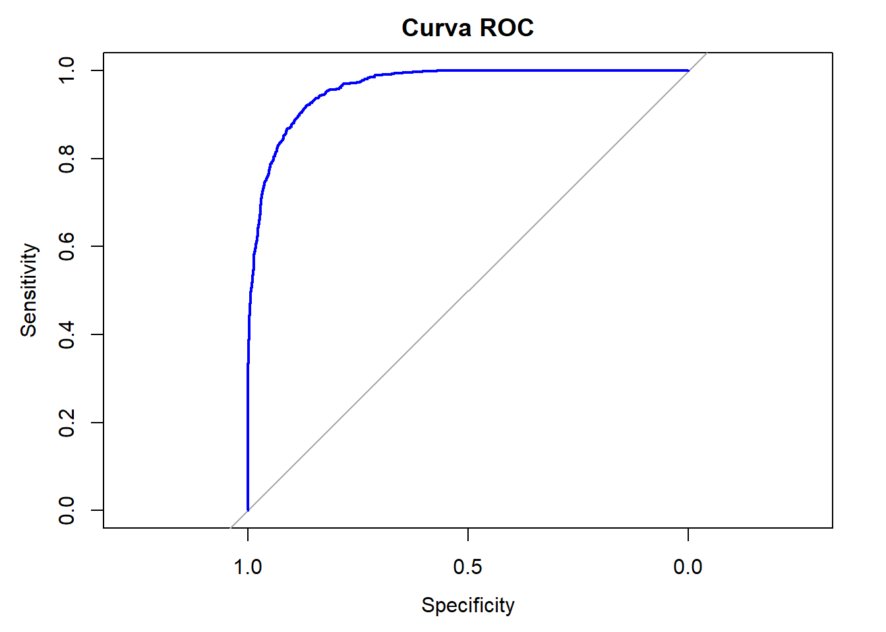
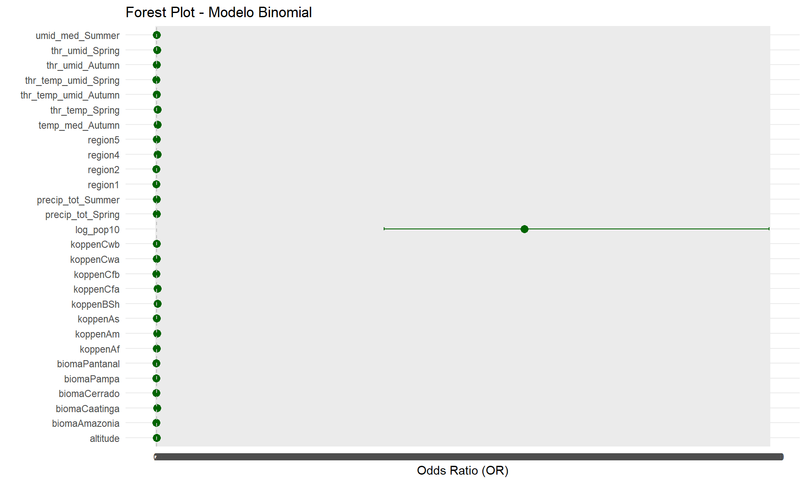
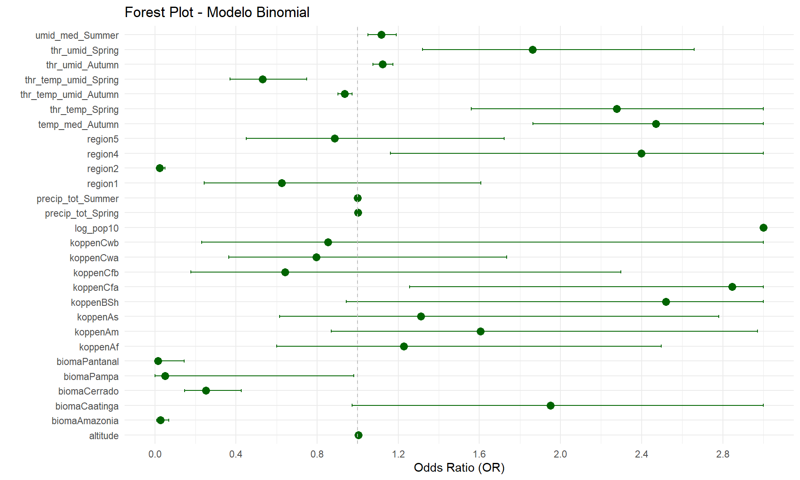

#Lendo
banco_determinantes <- read_csv2("banco_determinantes_bi.csv")
clima_org_model_10_16_season <- read_csv("clima_org_model_10_16_season.csv")
#Excluido as variáveis que não serão utilizadas
banco_determinantes <- banco_determinantes[,!(names(banco_determinantes) %in%
c("...1", "dengue_pattern_17_22"))]
clima_org_model_10_16_season <- clima_org_model_10_16_season[,!(names(clima_org_model_10_16_season) %in%
c("...1", "dengue_pattern", "precip_tot_Autumn"))]
# Renomeia a nova primeira coluna
colnames(clima_org_model_10_16_season)[1] <- "muni_code"
# Juntando
det_10_16 <- full_join(banco_determinantes, clima_org_model_10_16_season , by = "muni_code")
det_10_16 <- det_10_16[, !names(det_10_16) %in% c("pop22")]
## Removendo os bancos para a nálise ficar mais leve
remove(banco_determinantes)
remove(clima_org_model_10_16_season)Análise Regressão Logística Binomial A2 - 2010-2016 - com e sem pesos
Análise binomial para Tese de doutorado, foi rodado com peso e sem peso nas variáveis no texto principal, será colocado sem pes, em anexo a com peso e as comparações.
Bibliotecas
Bancos
Juntando os bancos de cada período para as modelagens dos períodos.
A precipitação total no outono (“precip_tot_Autumn”) não demonstrou uma relação significativa com a transmissão da dengue (p-valor = 0,214), o que sugere que não há evidências suficientes para incluí-la no modelo, levando à sua remoção da análise.
Análise 2010-2016
Análise do período de 2010-2016, primeira parte de uma série temporal da classificação de padrões de transmissão de todos os municípios brasileiros para dengue.
1. Arrumando variáveis
# Converter variáveis numéricas com vírgula decimal e categorizar as variáveis de texto
det_10_16 <- det_10_16 %>%
mutate(
across(where(~ all(grepl("^[0-9,.]+$", .))), ~ as.numeric(gsub(",", ".", .))),
across(where(is.character), as.factor))
det_10_16$dengue_pattern_10_16 <- as.factor(det_10_16$dengue_pattern_10_16)
# Visão geral dos dados
summary(det_10_16) muni_code region tipo_regiao altitude
Min. :1100015 Min. :1.000 metropolitana : 445 Min. : 1.67
1st Qu.:2512126 1st Qu.:2.000 nao metropolitana:5125 1st Qu.: 222.60
Median :3146280 Median :3.000 Median : 427.60
Mean :3253591 Mean :2.898 Mean : 451.24
3rd Qu.:4119190 3rd Qu.:4.000 3rd Qu.: 650.83
Max. :5300108 Max. :5.000 Max. :1601.42
koppen pop10 prop_residuo prop_esgot
Aw :1337 Min. : 805 Min. : 0.00 Min. : 0.00
Cfa :1138 1st Qu.: 5235 1st Qu.: 54.33 1st Qu.: 12.85
As : 892 Median : 10934 Median : 74.08 Median : 38.03
BSh : 420 Mean : 34274 Mean : 70.21 Mean : 42.27
Cwa : 407 3rd Qu.: 23421 3rd Qu.: 89.22 3rd Qu.: 70.44
Cfb : 405 Max. :11253503 Max. :100.00 Max. :100.00
(Other): 971 NA's :4
bioma dengue_pattern_10_16 temp_med_Autumn umid_med_Autumn
Amazonia : 503 0:4915 Min. :12.90 Min. :52.73
Caatinga :1095 1: 655 1st Qu.:19.37 1st Qu.:72.58
Cerrado :1062 Median :22.72 Median :77.93
Mata Atlantica:2741 Mean :22.25 Mean :76.60
Pampa : 160 3rd Qu.:25.36 3rd Qu.:81.53
Pantanal : 9 Max. :28.18 Max. :91.90
NA's :3 NA's :3
thr_temp_Autumn thr_umid_Autumn thr_prec_Autumn thr_temp_umid_Autumn
Min. : 0.00 Min. : 0.00 Min. : 0.00 Min. : 0.00
1st Qu.:38.57 1st Qu.:81.86 1st Qu.:18.00 1st Qu.:35.29
Median :84.43 Median :90.57 Median :23.43 Median :61.71
Mean :66.88 Mean :83.54 Mean :26.76 Mean :58.77
3rd Qu.:92.00 3rd Qu.:91.86 3rd Qu.:31.71 3rd Qu.:86.00
Max. :92.00 Max. :92.00 Max. :88.57 Max. :92.00
temp_med_Spring umid_med_Spring precip_tot_Spring thr_temp_Spring
Min. :15.39 Min. :42.80 Min. : 0.0 Min. : 0.00
1st Qu.:21.58 1st Qu.:67.09 1st Qu.: 700.2 1st Qu.:68.14
Median :24.37 Median :71.88 Median :1667.6 Median :89.14
Mean :24.06 Mean :70.76 Mean :1443.3 Mean :77.53
3rd Qu.:26.29 3rd Qu.:76.70 3rd Qu.:2005.4 3rd Qu.:90.71
Max. :31.28 Max. :90.22 Max. :3257.9 Max. :90.71
NA's :3 NA's :3
thr_umid_Spring thr_prec_Spring thr_temp_umid_Spring temp_med_Summer
Min. : 0.00 Min. : 0.00 Min. : 0.00 Min. :18.47
1st Qu.:64.29 1st Qu.:17.14 1st Qu.:46.14 1st Qu.:23.49
Median :79.50 Median :34.29 Median :62.57 Median :24.94
Mean :71.55 Mean :30.18 Mean :59.01 Mean :24.67
3rd Qu.:89.14 3rd Qu.:40.57 3rd Qu.:74.14 3rd Qu.:25.94
Max. :90.71 Max. :78.43 Max. :90.71 Max. :28.77
NA's :3
umid_med_Summer precip_tot_Summer thr_temp_Summer thr_umid_Summer
Min. :55.31 Min. : 0 Min. : 0.00 Min. : 0.00
1st Qu.:74.01 1st Qu.:1234 1st Qu.:88.43 1st Qu.:83.14
Median :77.75 Median :1861 Median :90.29 Median :87.43
Mean :76.77 Mean :1884 Mean :87.28 Mean :82.16
3rd Qu.:80.86 3rd Qu.:2400 3rd Qu.:90.29 3rd Qu.:90.14
Max. :91.60 Max. :5920 Max. :90.29 Max. :90.29
NA's :3
thr_prec_Summer thr_temp_umid_Summer temp_med_Winter umid_med_Winter
Min. : 0.00 Min. : 0.00 Min. :11.43 Min. :36.38
1st Qu.:27.57 1st Qu.:75.57 1st Qu.:18.17 1st Qu.:56.63
Median :42.14 Median :84.57 Median :21.63 Median :69.07
Mean :41.55 Mean :79.21 Mean :21.50 Mean :66.70
3rd Qu.:52.57 3rd Qu.:89.86 3rd Qu.:24.94 3rd Qu.:77.93
Max. :88.86 Max. :90.29 Max. :30.04 Max. :90.85
NA's :3 NA's :3
precip_tot_Winter thr_temp_Winter thr_umid_Winter thr_prec_Winter
Min. : 0.0 Min. : 0.00 Min. : 0.00 Min. : 0.000
1st Qu.: 149.8 1st Qu.:21.46 1st Qu.:33.29 1st Qu.: 2.714
Median : 396.7 Median :74.50 Median :75.57 Median : 9.143
Mean : 669.6 Mean :59.09 Mean :61.54 Mean :13.717
3rd Qu.:1020.8 3rd Qu.:92.00 3rd Qu.:90.43 3rd Qu.:23.429
Max. :3122.8 Max. :92.00 Max. :92.00 Max. :82.571
thr_temp_umid_Winter
Min. : 0.00
1st Qu.: 7.00
Median :16.71
Mean :31.09
3rd Qu.:49.43
Max. :92.00
# Transformando a população em log base 10
det_10_16$log_pop10 <- log10(det_10_16$pop10)
# Removendo a coluna original pop10
det_10_16$pop10 <- NULL
# Verificando a transformação
summary(det_10_16$log_pop10) Min. 1st Qu. Median Mean 3rd Qu. Max. NA's
2.906 3.719 4.039 4.089 4.370 7.051 4 Pré- modelo geral
2. Verificação dos pressupostos
Verificação de valores ausentes (NA)
Valores ausentes podem comprometer a análise, pois a regressão binomial não lida bem com dados incompletos. Se houver muitas ausências em uma variável, pode ser necessário removê-la ou imputar valores. Caso haja poucos valores faltantes, a remoção de linhas (na.omit()) pode ser suficiente. A ausência de NA indica que o banco está pronto para a modelagem.
Interpretação: Foram removidas 7 linhas, correspondendo a 7 municípios. Destes, 3 foram devido à ausência de dados climáticos no mesmo ano, sendo eles: Fernando de Noronha (PE), Itaparica (BA) e Madre de Deus (BA). Outros 4 foi pela falta de dados da população do censo 2010, ou porque os muncípios ainda não existima ou porque não eram emancipados. São eles: Mojuí dos Campos (PA), Paraíso das Águas, Pinto bandeira e XXXX.
# Verificação de valores ausentes
# Filtrar apenas os muni_code onde há pelo menos um NA em outras colunas
muni_com_na <- det_10_16[rowSums(is.na(det_10_16)) > 0, "muni_code"]
# Exibir os muni_code afetados
print(unique(muni_com_na))# A tibble: 7 × 1
muni_code
<dbl>
1 1504752
2 2605459
3 2916104
4 2919926
5 4212650
6 4314548
7 5006275# Verificação de valores ausentes
cat("Valores ausentes por variável:\n")Valores ausentes por variável:print(colSums(is.na(det_10_16))) muni_code region tipo_regiao
0 0 0
altitude koppen prop_residuo
0 0 0
prop_esgot bioma dengue_pattern_10_16
0 0 0
temp_med_Autumn umid_med_Autumn thr_temp_Autumn
3 3 0
thr_umid_Autumn thr_prec_Autumn thr_temp_umid_Autumn
0 0 0
temp_med_Spring umid_med_Spring precip_tot_Spring
3 3 0
thr_temp_Spring thr_umid_Spring thr_prec_Spring
0 0 0
thr_temp_umid_Spring temp_med_Summer umid_med_Summer
0 3 3
precip_tot_Summer thr_temp_Summer thr_umid_Summer
0 0 0
thr_prec_Summer thr_temp_umid_Summer temp_med_Winter
0 0 3
umid_med_Winter precip_tot_Winter thr_temp_Winter
3 0 0
thr_umid_Winter thr_prec_Winter thr_temp_umid_Winter
0 0 0
log_pop10
4 # Remover linhas com NA (se necessário)
det_10_16 <- na.omit(det_10_16)Análise de Correlação
A análise de correlação mede a relação entre duas ou mais variáveis, indicando a força e a direção da associação entre elas. Valores próximos de +1 ou -1 indicam correlações fortes positivas ou negativas, respectivamente, enquanto valores próximos de 0 sugerem ausência de relação significativa. Nesse caso o critério foi o padrão de >0.80.
Critério de exclusão da variável: - Se ela tiver correlação com mais de uma variável ela será retirada. - Aquelas que só tiverem correlação com mais uma variável, será testada no modelo para saber se é retirada.
Interpretação: sairam 14 variáveis iniciais, depois mais 3 “thr_prec_Winter”, “thr_umid_Winter”, “thr_prec_Spring”.
# Definir colunas a serem excluídas
colunas_excluir <- c(1:3,5,8,9)
### FASE 1: Cálculo inicial da matriz de correlação e filtragem inicial
# Calcular matriz de correlação excluindo colunas indesejadas
matriz_correlacao_1 <- cor(det_10_16[, -colunas_excluir])
# Criar e exibir gráfico de correlação
grafico_correlacao_1 <- ggcorrplot(matriz_correlacao_1, method = "circle", type = "lower",
hc.order = TRUE, lab = TRUE, lab_size = 3,
colors = c("#6D9EC1", "white", "#E46726"),
title = "Matriz de Correlação - Fase 1",
ggtheme = theme_minimal())
print(grafico_correlacao_1)
# Salvar o gráfico
ggsave("correlacao_fase1.png", grafico_correlacao_1, width = 40, height = 10, dpi = 300)
# Filtrar correlações acima de 0.80
correlacao_filtrada_1 <- ifelse(abs(matriz_correlacao_1) > 0.80, matriz_correlacao_1, NA)
# Remover linhas e colunas vazias após a filtragem
correlacao_filtrada_1 <- correlacao_filtrada_1[rowSums(!is.na(correlacao_filtrada_1)) > 0,
colSums(!is.na(correlacao_filtrada_1)) > 0]
# Salvar a matriz filtrada
write.csv2(correlacao_filtrada_1, "matriz_correlacao_filtrada_fase1.csv", na = "")
# Contar quantas correlações acima de 0.80 cada variável possui
contagem_correlacoes_1 <- rowSums(!is.na(correlacao_filtrada_1))
# Identificar variáveis com 3 ou mais correlações
variaveis_remover_1 <- names(contagem_correlacoes_1[contagem_correlacoes_1 >= 3])
# Criar novo conjunto de dados sem essas variáveis
det_10_16_fase2 <- det_10_16[, !(names(det_10_16) %in% variaveis_remover_1)]
# Verificar estrutura do novo banco após remoção
str(det_10_16_fase2)tibble [5,563 × 23] (S3: tbl_df/tbl/data.frame)
$ muni_code : num [1:5563] 1100015 1100023 1100031 1100049 1100056 ...
$ region : num [1:5563] 1 1 1 1 1 1 1 1 1 1 ...
$ tipo_regiao : Factor w/ 2 levels "metropolitana",..: 2 2 2 1 2 2 2 2 2 2 ...
$ altitude : num [1:5563] 246 166 224 230 192 ...
$ koppen : Factor w/ 9 levels "Af","Am","As",..: 2 2 2 2 2 2 2 2 2 2 ...
$ prop_residuo : num [1:5563] 56.9 85.1 49.8 78.9 78.3 ...
$ prop_esgot : num [1:5563] 2.24 8.91 21.01 54.03 16.73 ...
$ bioma : Factor w/ 6 levels "Amazonia","Caatinga",..: 1 1 1 1 1 1 1 1 1 1 ...
$ dengue_pattern_10_16: Factor w/ 2 levels "0","1": 1 2 1 2 2 2 1 1 2 1 ...
$ thr_umid_Autumn : num [1:5563] 92 91.7 91.6 91 91.7 ...
$ thr_prec_Autumn : num [1:5563] 41.9 49.4 34.9 41.4 35 ...
$ precip_tot_Spring : num [1:5563] 1963 2418 1993 2308 1968 ...
$ thr_prec_Spring : num [1:5563] 56 64.1 52.1 59.6 51.9 ...
$ thr_temp_umid_Spring: num [1:5563] 89.4 90 87.7 87.9 88.1 ...
$ precip_tot_Summer : num [1:5563] 3180 3857 3268 3595 3278 ...
$ thr_temp_Summer : num [1:5563] 90.3 90.3 90.3 90.3 90.3 ...
$ thr_temp_umid_Summer: num [1:5563] 90.3 90.3 90.3 90.3 90.3 ...
$ umid_med_Winter : num [1:5563] 65.5 60.5 64.5 57.7 64.5 ...
$ precip_tot_Winter : num [1:5563] 230 328 181 199 185 ...
$ thr_umid_Winter : num [1:5563] 61.1 45.3 57.4 37.1 58.1 ...
$ thr_prec_Winter : num [1:5563] 7.14 9 5 5.57 5 ...
$ thr_temp_umid_Winter: num [1:5563] 60.4 45.3 56.1 37.1 57.3 ...
$ log_pop10 : num [1:5563] 4.39 4.96 3.8 4.9 4.23 ...
- attr(*, "na.action")= 'omit' Named int [1:7] 225 1526 2018 2067 4504 4924 5161
..- attr(*, "names")= chr [1:7] "225" "1526" "2018" "2067" ...### FASE 2: Nova correlação após remoção das variáveis altamente correlacionadas
# Calcular matriz de correlação novamente
matriz_correlacao_2 <- cor(det_10_16_fase2[, -colunas_excluir])
# Criar e exibir gráfico de correlação
grafico_correlacao_2 <- ggcorrplot(matriz_correlacao_2, method = "circle", type = "lower",
hc.order = TRUE, lab = TRUE, lab_size = 3,
colors = c("#6D9EC1", "white", "#E46726"),
title = "Matriz de Correlação - Fase 2",
ggtheme = theme_minimal())
print(grafico_correlacao_2)
# Salvar gráfico atualizado
ggsave("correlacao_fase2.png", grafico_correlacao_2, width = 40, height = 10, dpi = 300)
# Filtrar correlações acima de 0.80 novamente
correlacao_filtrada_2 <- ifelse(abs(matriz_correlacao_2) > 0.80, matriz_correlacao_2, NA)
# Remover linhas e colunas vazias após nova filtragem
correlacao_filtrada_2 <- correlacao_filtrada_2[rowSums(!is.na(correlacao_filtrada_2)) > 0,
colSums(!is.na(correlacao_filtrada_2)) > 0]
# Salvar a matriz filtrada novamente
write.csv2(correlacao_filtrada_2, "matriz_correlacao_filtrada_fase2.csv", na = "")
# Contar quantas correlações acima de 0.80 cada variável possui
contagem_correlacoes_2 <- rowSums(!is.na(correlacao_filtrada_2))
## Aqui é feita uma análise mais manual para determinar quem sai quem fica, pode ser só descritiva ou usanso modelagem.
# Excluindo variaveis manualmente
variaveis_excluir_manualmente <- c("thr_prec_Winter", "thr_umid_Winter", "thr_prec_Spring")
# Criar novo conjunto de dados sem as variáveis escolhidas manualmente
det_10_16_fase3 <- det_10_16_fase2[, !(names(det_10_16_fase2) %in% variaveis_excluir_manualmente)]
### FASE 3: Última correlação após refinamento
# Calcular matriz de correlação final
matriz_correlacao_3 <- cor(det_10_16_fase3[, -colunas_excluir])
# Criar e exibir gráfico de correlação final
grafico_correlacao_3 <- ggcorrplot(matriz_correlacao_3, method = "circle", type = "lower",
hc.order = TRUE, lab = TRUE, lab_size = 3,
colors = c("#6D9EC1", "white", "#E46726"),
title = "Matriz de Correlação - Fase 3",
ggtheme = theme_minimal())
print(grafico_correlacao_3)
# Salvar gráfico final
ggsave("correlacao_fase3.png", grafico_correlacao_3, width = 40, height = 10, dpi = 300)Pós- modelo geral
Análise de multicolinearidade com VIF
A multicolinearidade ocorre quando variáveis independentes estão altamente correlacionadas, dificultando a interpretação do modelo. O VIF (Variance Inflation Factor) mede essa relação: valores acima de 5 indicam uma correlação preocupante, e acima de 10 exigem ajustes, como exclusão ou transformação de variáveis.
Interpretação: Nenhum está acima de 10 , então não precisa de ajuste, porém tem multicolinearidade moderada por que está de 5 a 10, mas isso o modelo pode dar conta no ajuste.
Verificação de outliers nos resíduos padronizados
Outliers podem distorcer os coeficientes da regressão binomial e afetar a qualidade da predição. A análise dos resíduos padronizados permite identificar observações extremas, geralmente consideradas problemáticas quando estão fora do intervalo de -3 a 3. Se houver muitos outliers, pode ser necessário revisar a entrada de dados ou aplicar transformações.
Interpretação: Foram retiradas 3 linhas ou seja 3 municípios todos da categoria 1 e não metropolitanos. Todos com intervalos acima de -3 e 3. Presentes na tabela outliers_binomial_model_10_16.csv. São eles: 1600501, 5108204 e 5221502 .
# modelo geral sem categoria de referência
binomial_model <- glm(dengue_pattern_10_16 ~ ., data = det_10_16 , family = binomial)Warning: glm.fit: probabilidades ajustadas numericamente 0 ou 1 ocorreusummary(binomial_model)
Call:
glm(formula = dengue_pattern_10_16 ~ ., family = binomial, data = det_10_16)
Coefficients:
Estimate Std. Error z value Pr(>|z|)
(Intercept) -6.093e+03 1.784e+05 -0.034 0.972759
muni_code -1.348e-06 4.739e-07 -2.844 0.004458 **
region 1.300e+00 4.193e-01 3.100 0.001934 **
tipo_regiaonao metropolitana -1.523e-01 2.408e-01 -0.632 0.527117
altitude 4.519e-03 1.428e-03 3.165 0.001553 **
koppenAm 1.324e-01 3.957e-01 0.335 0.737889
koppenAs -3.717e-01 4.921e-01 -0.755 0.449983
koppenAw -2.920e-01 4.219e-01 -0.692 0.488857
koppenBSh 4.669e-02 5.979e-01 0.078 0.937752
koppenCfa 5.906e-01 5.431e-01 1.087 0.276832
koppenCfb -8.454e-01 7.904e-01 -1.070 0.284840
koppenCwa -4.802e-01 5.509e-01 -0.872 0.383402
koppenCwb -1.637e-01 8.109e-01 -0.202 0.840035
prop_residuo 3.707e-03 4.464e-03 0.830 0.406358
prop_esgot -6.603e-04 3.220e-03 -0.205 0.837536
biomaCaatinga 2.181e+00 6.346e-01 3.437 0.000588 ***
biomaCerrado 7.449e-01 4.867e-01 1.531 0.125865
biomaMata Atlantica 1.845e+00 5.625e-01 3.279 0.001041 **
biomaPampa -1.507e+00 1.964e+00 -0.768 0.442730
biomaPantanal -8.835e-01 1.205e+00 -0.733 0.463433
temp_med_Autumn -8.887e-01 4.501e-01 -1.975 0.048311 *
umid_med_Autumn -4.002e-01 1.002e-01 -3.993 6.52e-05 ***
thr_temp_Autumn -1.149e-01 2.336e-01 -0.492 0.622865
thr_umid_Autumn 1.135e-02 2.264e-01 0.050 0.960021
thr_prec_Autumn 4.597e-03 2.582e-02 0.178 0.858688
thr_temp_umid_Autumn 7.998e-02 2.247e-01 0.356 0.721934
temp_med_Spring -5.694e-01 5.073e-01 -1.122 0.261687
umid_med_Spring 5.798e-02 1.126e-01 0.515 0.606692
precip_tot_Spring 1.356e-03 6.234e-04 2.176 0.029576 *
thr_temp_Spring 7.449e-01 2.141e-01 3.479 0.000503 ***
thr_umid_Spring 5.963e-01 1.901e-01 3.137 0.001708 **
thr_prec_Spring -3.199e-02 3.160e-02 -1.012 0.311391
thr_temp_umid_Spring -5.975e-01 1.916e-01 -3.118 0.001819 **
temp_med_Summer 1.261e+00 4.267e-01 2.956 0.003119 **
umid_med_Summer 2.777e-01 1.100e-01 2.525 0.011558 *
precip_tot_Summer -2.164e-05 3.507e-04 -0.062 0.950803
thr_temp_Summer 6.621e+01 1.976e+03 0.034 0.973273
thr_umid_Summer 6.616e+01 1.976e+03 0.033 0.973296
thr_prec_Summer -1.550e-02 2.651e-02 -0.585 0.558677
thr_temp_umid_Summer -6.619e+01 1.976e+03 -0.033 0.973282
temp_med_Winter 1.026e+00 4.452e-01 2.305 0.021166 *
umid_med_Winter 5.461e-02 6.638e-02 0.823 0.410634
precip_tot_Winter -1.419e-03 6.218e-04 -2.282 0.022504 *
thr_temp_Winter 3.091e-02 4.998e-02 0.618 0.536305
thr_umid_Winter 3.793e-02 4.721e-02 0.804 0.421633
thr_prec_Winter 6.373e-02 3.052e-02 2.088 0.036771 *
thr_temp_umid_Winter -2.983e-02 4.872e-02 -0.612 0.540394
log_pop10 6.204e+00 2.446e-01 25.365 < 2e-16 ***
---
Signif. codes: 0 '***' 0.001 '**' 0.01 '*' 0.05 '.' 0.1 ' ' 1
(Dispersion parameter for binomial family taken to be 1)
Null deviance: 4028.1 on 5562 degrees of freedom
Residual deviance: 1695.5 on 5515 degrees of freedom
AIC: 1791.5
Number of Fisher Scoring iterations: 18# Verificação de Multicolinearidade (VIF)
# VIF só pode ser calculado em variáveis numéricas, então convertemos as categóricas para dummies
vif_values <- vif(binomial_model)
cat("\nValores de VIF:\n")
Valores de VIF:print(vif_values) GVIF Df GVIF^(1/(2*Df))
muni_code 6.118356e+01 1 7.821992e+00
region 5.768757e+01 1 7.595233e+00
tipo_regiao 1.480329e+00 1 1.216688e+00
altitude 3.478146e+01 1 5.897581e+00
koppen 2.277703e+03 8 1.621226e+00
prop_residuo 2.206263e+00 1 1.485350e+00
prop_esgot 2.683291e+00 1 1.638075e+00
bioma 1.349604e+02 5 1.633130e+00
temp_med_Autumn 3.290524e+02 1 1.813980e+01
umid_med_Autumn 1.245751e+02 1 1.116132e+01
thr_temp_Autumn 6.148391e+03 1 7.841168e+01
thr_umid_Autumn 2.121093e+03 1 4.605532e+01
thr_prec_Autumn 4.145949e+01 1 6.438905e+00
thr_temp_umid_Autumn 5.696706e+03 1 7.547653e+01
temp_med_Spring 3.321370e+02 1 1.822462e+01
umid_med_Spring 2.201272e+02 1 1.483668e+01
precip_tot_Spring 5.184282e+01 1 7.200196e+00
thr_temp_Spring 1.305898e+03 1 3.613721e+01
thr_umid_Spring 3.990567e+03 1 6.317093e+01
thr_prec_Spring 7.445138e+01 1 8.628522e+00
thr_temp_umid_Spring 3.846658e+03 1 6.202143e+01
temp_med_Summer 8.134809e+01 1 9.019318e+00
umid_med_Summer 1.532233e+02 1 1.237834e+01
precip_tot_Summer 3.033953e+01 1 5.508133e+00
thr_temp_Summer 6.517450e+09 1 8.073073e+04
thr_umid_Summer 1.641312e+11 1 4.051311e+05
thr_prec_Summer 7.286809e+01 1 8.536281e+00
thr_temp_umid_Summer 1.630982e+11 1 4.038542e+05
temp_med_Winter 5.359810e+02 1 2.315126e+01
umid_med_Winter 1.686457e+02 1 1.298637e+01
precip_tot_Winter 2.185911e+01 1 4.675373e+00
thr_temp_Winter 4.657964e+02 1 2.158232e+01
thr_umid_Winter 5.501106e+02 1 2.345444e+01
thr_prec_Winter 3.972582e+01 1 6.302842e+00
thr_temp_umid_Winter 6.248624e+02 1 2.499725e+01
log_pop10 1.757201e+00 1 1.325595e+00# Verificação de Outliers com Resíduos Padronizados
# Criar uma coluna de resíduos padronizados
det_10_16$residuos <- rstandard(binomial_model)
# Filtrar apenas os outliers (resíduos <= -3 ou >= 3)
outliers <- det_10_16 %>% filter(residuos <= -3 | residuos >= 3)
# Verificar o novo banco de dados com os outliers
print(outliers)# A tibble: 3 × 38
muni_code region tipo_regiao altitude koppen prop_residuo prop_esgot bioma
<dbl> <dbl> <fct> <dbl> <fct> <dbl> <dbl> <fct>
1 1600501 1 nao metropolit… 103. Am 67.0 23.9 Amaz…
2 5108204 5 nao metropolit… 523. Aw 70.2 39.0 Cerr…
3 5221502 5 nao metropolit… 646. Aw 73.5 2.81 Cerr…
# ℹ 30 more variables: dengue_pattern_10_16 <fct>, temp_med_Autumn <dbl>,
# umid_med_Autumn <dbl>, thr_temp_Autumn <dbl>, thr_umid_Autumn <dbl>,
# thr_prec_Autumn <dbl>, thr_temp_umid_Autumn <dbl>, temp_med_Spring <dbl>,
# umid_med_Spring <dbl>, precip_tot_Spring <dbl>, thr_temp_Spring <dbl>,
# thr_umid_Spring <dbl>, thr_prec_Spring <dbl>, thr_temp_umid_Spring <dbl>,
# temp_med_Summer <dbl>, umid_med_Summer <dbl>, precip_tot_Summer <dbl>,
# thr_temp_Summer <dbl>, thr_umid_Summer <dbl>, thr_prec_Summer <dbl>, …# Salvando banco
write.csv2(outliers, "outliers_binomial_model_10_16.csv", row.names = FALSE)
# Removendo as observações que eram outliers (≤ -3 ou ≥ 3).
det_10_16<- det_10_16 %>% filter(residuos > -3 & residuos < 3)
#Visualization
ggplot(det_10_16 , aes(x = 1:nrow(det_10_16), y = residuos)) +
geom_point() +
geom_hline(yintercept = c(-3, 3), linetype = "dashed", color = "red") +
labs(title = "Verificação de Outliers", x = "Índice", y = "Resíduos Padronizados")
3. Modelo de regressão logística binomial
A variável dependente passou a ter pesos diferentes em suas categorias. A categoria 0 tinha aproximandamente 8 vezes o valor de municípios da categoria 1, então a categoria com menos observações foi otimizada de modo a aumentar a taxa de verdadeiros positivos nesta categoria, usanso peso 8. Ref: https://www.sciencedirect.com/science/article/abs/pii/S0950705114000239
Para cada categoria (em relação à referência “0”), o modelo estima coeficientes (Coefficients) para cada variável preditora. Esses coeficientes representam o efeito de cada variável sobre a probabilidade de estar nas categorias 1, em comparação com 0.
# Remover colunas pelo nome
det_10_16 <- det_10_16[, !names(det_10_16) %in% c("muni_code")]
# Transformar 'region' em fator
det_10_16$region <- as.factor(det_10_16$region)
# Remover linhas com valores NA em colunas numéricas
det_10_16 <- det_10_16 %>%
filter(!if_any(where(is.numeric), is.na))
# Converter para fator após a modificação
det_10_16$dengue_pattern_10_16 <- as.factor(det_10_16$dengue_pattern_10_16)
# Definir a categoria de referência para a variável dependente
det_10_16$dengue_pattern_10_16 <- relevel(det_10_16$dengue_pattern_10_16, ref = "0")
# Definir a categoria de referência para variáveis independentes
det_10_16$region <- relevel(det_10_16$region, ref = "3")
det_10_16$bioma <- relevel(det_10_16$bioma, ref = "Mata Atlantica")
det_10_16$tipo_regiao <- relevel(det_10_16$tipo_regiao , ref = "nao metropolitana")
det_10_16$koppen <- relevel(det_10_16$koppen, ref = "Aw")
# Remover resíduos
det_10_16$residuos <- NULL
# dando peso as categorias da variável dependente
#weights_vector <- ifelse(det_10_16$dengue_pattern_10_16 == 1, 8, 1)
# Criar modelo logístico binomial
# Com peso
#binomial_model <- glm(weights = weights_vector, dengue_pattern_10_16 ~ ., data = det_10_16, family = binomial)
#summary(binomial_model)
# Sem peso
binomial_model <- glm(dengue_pattern_10_16 ~ ., data = det_10_16, family = binomial)Warning: glm.fit: probabilidades ajustadas numericamente 0 ou 1 ocorreusummary(binomial_model)
Call:
glm(formula = dengue_pattern_10_16 ~ ., family = binomial, data = det_10_16)
Coefficients:
Estimate Std. Error z value Pr(>|z|)
(Intercept) -6.221e+03 2.771e+05 -0.022 0.982088
region1 2.307e-01 5.564e-01 0.415 0.678402
region2 -3.270e+00 5.541e-01 -5.901 3.61e-09 ***
region4 1.401e+00 4.741e-01 2.956 0.003120 **
region5 2.150e-01 4.143e-01 0.519 0.603874
tipo_regiaometropolitana 9.143e-02 2.458e-01 0.372 0.709920
altitude 6.015e-03 1.528e-03 3.937 8.25e-05 ***
koppenAf 4.697e-01 4.337e-01 1.083 0.278821
koppenAm 4.146e-01 3.350e-01 1.237 0.215918
koppenAs 2.781e-01 4.329e-01 0.642 0.520666
koppenBSh 7.867e-01 5.560e-01 1.415 0.157095
koppenCfa 7.052e-01 4.402e-01 1.602 0.109116
koppenCfb -8.792e-01 7.279e-01 -1.208 0.227090
koppenCwa -1.982e-01 4.258e-01 -0.466 0.641547
koppenCwb 1.379e-01 7.441e-01 0.185 0.852972
prop_residuo -3.696e-03 4.639e-03 -0.797 0.425675
prop_esgot 1.086e-03 3.563e-03 0.305 0.760549
biomaAmazonia -2.624e+00 6.172e-01 -4.251 2.13e-05 ***
biomaCaatinga 6.873e-01 4.213e-01 1.631 0.102810
biomaCerrado -1.119e+00 3.071e-01 -3.644 0.000269 ***
biomaPampa -3.246e+00 2.022e+00 -1.605 0.108516
biomaPantanal -3.457e+00 1.228e+00 -2.816 0.004862 **
temp_med_Autumn 4.205e-01 5.082e-01 0.827 0.407978
umid_med_Autumn -8.533e-02 1.112e-01 -0.767 0.442849
thr_temp_Autumn -1.851e-01 2.451e-01 -0.755 0.449971
thr_umid_Autumn -5.728e-02 2.370e-01 -0.242 0.809015
thr_prec_Autumn -8.821e-03 2.624e-02 -0.336 0.736727
thr_temp_umid_Autumn 1.278e-01 2.353e-01 0.543 0.586999
temp_med_Spring -1.298e+00 5.283e-01 -2.457 0.013996 *
umid_med_Spring -7.740e-02 1.174e-01 -0.659 0.509651
precip_tot_Spring 1.558e-03 6.453e-04 2.415 0.015743 *
thr_temp_Spring 8.932e-01 2.206e-01 4.050 5.12e-05 ***
thr_umid_Spring 6.934e-01 1.962e-01 3.534 0.000410 ***
thr_prec_Spring -3.688e-02 3.298e-02 -1.118 0.263436
thr_temp_umid_Spring -7.088e-01 1.977e-01 -3.585 0.000337 ***
temp_med_Summer 1.402e+00 4.599e-01 3.048 0.002307 **
umid_med_Summer 2.656e-01 1.169e-01 2.272 0.023082 *
precip_tot_Summer -6.824e-04 3.558e-04 -1.918 0.055153 .
thr_temp_Summer 6.741e+01 3.069e+03 0.022 0.982477
thr_umid_Summer 6.739e+01 3.069e+03 0.022 0.982482
thr_prec_Summer 3.007e-03 2.799e-02 0.107 0.914469
thr_temp_umid_Summer -6.741e+01 3.069e+03 -0.022 0.982477
temp_med_Winter 6.935e-01 4.459e-01 1.555 0.119925
umid_med_Winter -3.428e-02 6.746e-02 -0.508 0.611377
precip_tot_Winter -1.483e-03 7.056e-04 -2.102 0.035543 *
thr_temp_Winter 9.732e-03 5.226e-02 0.186 0.852263
thr_umid_Winter 3.093e-02 4.971e-02 0.622 0.533804
thr_prec_Winter 7.783e-02 3.271e-02 2.379 0.017358 *
thr_temp_umid_Winter -1.166e-02 5.110e-02 -0.228 0.819527
log_pop10 6.565e+00 2.627e-01 24.986 < 2e-16 ***
---
Signif. codes: 0 '***' 0.001 '**' 0.01 '*' 0.05 '.' 0.1 ' ' 1
(Dispersion parameter for binomial family taken to be 1)
Null deviance: 4015.2 on 5559 degrees of freedom
Residual deviance: 1609.1 on 5510 degrees of freedom
AIC: 1709.1
Number of Fisher Scoring iterations: 194. Seleção de variáveis
O stepwise é um método automatizado de seleção de variáveis em modelos estatísticos, que adiciona ou remove preditores com base em critérios como o AIC (Akaike Information Criterion). Ele busca um equilíbrio entre ajuste e simplicidade do modelo, evitando a inclusão de variáveis irrelevantes. Na regressão binomial, interpreta-se o modelo final pelos coeficientes das variáveis selecionadas, que indicam a influência de cada preditor na probabilidade do evento analisado, além do AIC, que avalia a qualidade do ajuste.
# Criar o modelo inicial (nulo com region e pop10)
# Com peso
#null_model <- glm(weights = weights_vector, dengue_pattern_10_16 ~ region + log_pop10, data = det_10_16, family = binomial)
# Sem peso
null_model <- glm(dengue_pattern_10_16 ~ region + log_pop10, data = det_10_16,
family = binomial)
# Criar o modelo completo (com todas as variáveis preditoras adicionais)
full_formula <- as.formula(paste("dengue_pattern_10_16 ~ region + log_pop10 +",
paste(setdiff(names(det_10_16), c("dengue_pattern_17_22_17_22", "region", "log_pop10")),
collapse = " + ")))
full_model <- glm(full_formula, data = det_10_16, family = binomial)
# Aplicar a seleção stepwise sem mostrar o processo intermediário
step_model <- stepAIC(null_model,
scope = list(lower = null_model, upper = full_model),
direction = "both",
trace = FALSE) # <- Isso esconde as iterações
# Exibir apenas o resumo final do modelo
print(summary(step_model))
Call:
glm(formula = dengue_pattern_10_16 ~ region + log_pop10 + thr_temp_Spring +
bioma + umid_med_Summer + koppen + temp_med_Autumn + thr_umid_Autumn +
altitude + thr_temp_umid_Autumn + precip_tot_Summer + precip_tot_Spring +
thr_temp_umid_Spring + thr_umid_Spring, family = binomial,
data = det_10_16)
Coefficients:
Estimate Std. Error z value Pr(>|z|)
(Intercept) -1.379e+02 1.826e+01 -7.554 4.22e-14 ***
region1 -4.684e-01 4.817e-01 -0.972 0.330836
region2 -3.787e+00 4.196e-01 -9.027 < 2e-16 ***
region4 8.747e-01 3.708e-01 2.359 0.018330 *
region5 -1.207e-01 3.415e-01 -0.353 0.723790
log_pop10 6.528e+00 2.521e-01 25.889 < 2e-16 ***
thr_temp_Spring 8.231e-01 1.958e-01 4.202 2.64e-05 ***
biomaAmazonia -3.630e+00 4.974e-01 -7.298 2.93e-13 ***
biomaCaatinga 6.685e-01 3.603e-01 1.855 0.063551 .
biomaCerrado -1.379e+00 2.727e-01 -5.059 4.22e-07 ***
biomaPampa -3.000e+00 1.854e+00 -1.618 0.105572
biomaPantanal -4.178e+00 1.192e+00 -3.506 0.000456 ***
umid_med_Summer 1.109e-01 3.182e-02 3.487 0.000489 ***
koppenAf 2.056e-01 3.633e-01 0.566 0.571412
koppenAm 4.738e-01 3.131e-01 1.513 0.130277
koppenAs 2.712e-01 3.844e-01 0.706 0.480439
koppenBSh 9.243e-01 5.040e-01 1.834 0.066689 .
koppenCfa 1.046e+00 4.153e-01 2.519 0.011765 *
koppenCfb -4.446e-01 6.540e-01 -0.680 0.496683
koppenCwa -2.285e-01 3.979e-01 -0.574 0.565806
koppenCwb -1.577e-01 6.659e-01 -0.237 0.812819
temp_med_Autumn 9.044e-01 1.446e-01 6.254 4.01e-10 ***
thr_umid_Autumn 1.162e-01 2.253e-02 5.157 2.52e-07 ***
altitude 3.542e-03 7.063e-04 5.015 5.29e-07 ***
thr_temp_umid_Autumn -6.569e-02 1.891e-02 -3.473 0.000514 ***
precip_tot_Summer -7.099e-04 2.172e-04 -3.269 0.001080 **
precip_tot_Spring 1.233e-03 2.227e-04 5.537 3.07e-08 ***
thr_temp_umid_Spring -6.352e-01 1.792e-01 -3.545 0.000393 ***
thr_umid_Spring 6.220e-01 1.785e-01 3.484 0.000494 ***
---
Signif. codes: 0 '***' 0.001 '**' 0.01 '*' 0.05 '.' 0.1 ' ' 1
(Dispersion parameter for binomial family taken to be 1)
Null deviance: 4015.2 on 5559 degrees of freedom
Residual deviance: 1631.4 on 5531 degrees of freedom
AIC: 1689.4
Number of Fisher Scoring iterations: 95. Avaliação do ajuste do modelo
Pseudo R² (Nagelkerke, McFadden, Cox & Snell) : Mede a proporção da variância explicada pelo modelo.
Valores típicos: McFadden R² > 0.2 → Bom ajuste
Nagelkerke R² > 0.4 → Muito bom ajuste
Teste de Verossimilhança (Likelihood Ratio Test - LRT): Compara um modelo com e sem variáveis explicativas para ver se o modelo ajustado é significativamente melhor do que um modelo nulo. Se o p-valor for baixo (< 0.05), rejeitamos o modelo nulo, indicando que as variáveis explicativas contribuem para a predição.
Curva ROC e AUC (Área Sob a Curva) : Mede a capacidade do modelo de discriminar entre as classes (0 e 1).
AUC = 0.5 → Modelo sem discriminação
AUC entre 0.7 e 0.8 → Bom modelo
AUC acima de 0.8 → Excelente modelo
Matriz de Confusão e Acurácia : Avalia o desempenho do modelo na predição correta das classes.
- Acurácia = (TP + TN) / (TP + TN + FP + FN)
- Interpretação: Com peso 8 na categoria 1 - verdadeiro positivo 0 = 0.91/ verdadeiro positivo 1 = 0.88
Resumindo:
| Método | Interpretação |
|---|---|
| Pseudo R² (Nagelkerke, McFadden) | Mede a proporção da variância explicada. Quanto maior, melhor. |
| LRT (Teste de Verossimilhança) | Verifica se o modelo ajustado é significativamente melhor que um modelo nulo. |
| Curva ROC e AUC | Mede a capacidade preditiva do modelo (valores > 0.8 indicam ótimo desempenho). |
| Matriz de Confusão | Avalia a acurácia da classificação do modelo. |
# Pseudo R²
pR2(step_model)fitting null model for pseudo-r2 llh llhNull G2 McFadden r2ML
-815.6823321 -2007.6005093 2383.8363545 0.5937029 0.3486757
r2CU
0.6779653 # Teste de verossimilhança (Comparação com modelo nulo)
anova(null_model, step_model, test = "Chisq")Analysis of Deviance Table
Model 1: dengue_pattern_10_16 ~ region + log_pop10
Model 2: dengue_pattern_10_16 ~ region + log_pop10 + thr_temp_Spring +
bioma + umid_med_Summer + koppen + temp_med_Autumn + thr_umid_Autumn +
altitude + thr_temp_umid_Autumn + precip_tot_Summer + precip_tot_Spring +
thr_temp_umid_Spring + thr_umid_Spring
Resid. Df Resid. Dev Df Deviance Pr(>Chi)
1 5554 2170.3
2 5531 1631.4 23 538.98 < 2.2e-16 ***
---
Signif. codes: 0 '***' 0.001 '**' 0.01 '*' 0.05 '.' 0.1 ' ' 1#Curva ROC e AUC (Área Sob a Curva)
roc_curve <- roc(det_10_16$dengue_pattern_10_16, fitted(step_model))Setting levels: control = 0, case = 1Setting direction: controls < casesplot(roc_curve, col = "blue", main = "Curva ROC")
auc(roc_curve) # Calcula a AUCArea under the curve: 0.9629# Matriz de Confusão e Acurácia
predicoes <- ifelse(fitted(step_model) > 0.5, 1, 0)
conf_matrix <- confusionMatrix(as.factor(predicoes), as.factor(det_10_16$dengue_pattern_10_16))
print(conf_matrix)Confusion Matrix and Statistics
Reference
Prediction 0 1
0 4791 232
1 118 419
Accuracy : 0.9371
95% CI : (0.9303, 0.9433)
No Information Rate : 0.8829
P-Value [Acc > NIR] : < 2.2e-16
Kappa : 0.6705
Mcnemar's Test P-Value : 1.54e-09
Sensitivity : 0.9760
Specificity : 0.6436
Pos Pred Value : 0.9538
Neg Pred Value : 0.7803
Prevalence : 0.8829
Detection Rate : 0.8617
Detection Prevalence : 0.9034
Balanced Accuracy : 0.8098
'Positive' Class : 0
5. Gerando gráfico Odds Ratio
Or, IC95%, p-valor
# Salvar o modelo final
modelo_final <- step_model
# Calcular Odds Ratio, Intervalo de Confiança e p-valor
odds_ratio_table <- exp(cbind(OR = coef(modelo_final), confint(modelo_final)))
p_values <- summary(modelo_final)$coefficients[, 4] # Extrair p-valores
# Transformar em data frame para melhor visualização
odds_ratio_df <- as.data.frame(odds_ratio_table)
odds_ratio_df$`p-valor` <- p_values # Adicionar p-valor à tabela
# Nomear colunas
colnames(odds_ratio_df) <- c("Odds Ratio", "IC 95% Lower", "IC 95% Upper", "p-valor")
# Arredondar valores para 4 casas decimais e evitar notação científica
odds_ratio_df <- odds_ratio_df %>%
mutate(across(everything(), ~ formatC(.x, format = "f", digits = 3)))
# Criar uma tabela formatada
kable(odds_ratio_df, caption = "Odds Ratio, Intervalo de Confiança (95%) e p-valor") %>%
kable_styling(full_width = FALSE, bootstrap_options = c("striped", "hover"))| Odds Ratio | IC 95% Lower | IC 95% Upper | p-valor | |
|---|---|---|---|---|
| (Intercept) | 0.000 | 0.000 | 0.000 | 0.000 |
| region1 | 0.626 | 0.243 | 1.607 | 0.331 |
| region2 | 0.023 | 0.010 | 0.051 | 0.000 |
| region4 | 2.398 | 1.162 | 4.979 | 0.018 |
| region5 | 0.886 | 0.451 | 1.723 | 0.724 |
| log_pop10 | 683.955 | 423.425 | 1138.381 | 0.000 |
| thr_temp_Spring | 2.277 | 1.561 | 3.367 | 0.000 |
| biomaAmazonia | 0.027 | 0.010 | 0.069 | 0.000 |
| biomaCaatinga | 1.951 | 0.973 | 4.005 | 0.064 |
| biomaCerrado | 0.252 | 0.146 | 0.426 | 0.000 |
| biomaPampa | 0.050 | 0.001 | 0.980 | 0.106 |
| biomaPantanal | 0.015 | 0.001 | 0.145 | 0.000 |
| umid_med_Summer | 1.117 | 1.050 | 1.190 | 0.000 |
| koppenAf | 1.228 | 0.600 | 2.497 | 0.571 |
| koppenAm | 1.606 | 0.869 | 2.972 | 0.130 |
| koppenAs | 1.312 | 0.615 | 2.780 | 0.480 |
| koppenBSh | 2.520 | 0.943 | 6.806 | 0.067 |
| koppenCfa | 2.847 | 1.257 | 6.412 | 0.012 |
| koppenCfb | 0.641 | 0.177 | 2.298 | 0.497 |
| koppenCwa | 0.796 | 0.364 | 1.734 | 0.566 |
| koppenCwb | 0.854 | 0.230 | 3.125 | 0.813 |
| temp_med_Autumn | 2.471 | 1.865 | 3.289 | 0.000 |
| thr_umid_Autumn | 1.123 | 1.075 | 1.174 | 0.000 |
| altitude | 1.004 | 1.002 | 1.005 | 0.000 |
| thr_temp_umid_Autumn | 0.936 | 0.902 | 0.972 | 0.001 |
| precip_tot_Summer | 0.999 | 0.999 | 1.000 | 0.001 |
| precip_tot_Spring | 1.001 | 1.001 | 1.002 | 0.000 |
| thr_temp_umid_Spring | 0.530 | 0.371 | 0.749 | 0.000 |
| thr_umid_Spring | 1.863 | 1.320 | 2.660 | 0.000 |
write.csv2(odds_ratio_df, "odds_ratio_tabela_17_22.csv", row.names = FALSE)Figura
# geral
# Extraindo os coeficientes do modelo multinomial com intervalo de confiança
tidy_model <- broom::tidy(modelo_final, conf.int = TRUE)
# Filtrando apenas os coeficientes das variáveis preditoras (removendo a categoria base)
tidy_model <- tidy_model %>%
filter(term != "(Intercept)")
# Convertendo os coeficientes log-OR para OR e arredondando para 3 casas decimais, sem limites
tidy_model <- tidy_model %>%
mutate(
estimate = round(exp(estimate), 3), # Convertendo log-OR para OR
conf.low = round(exp(conf.low), 3), # Convertendo intervalo inferior
conf.high = round(exp(conf.high), 3) # Convertendo intervalo superior
)
# Definindo os valores do eixo X dinamicamente, sem limite fixo
x_breaks <- seq(0, max(tidy_model$conf.high, na.rm = TRUE) + 1, by = 1)
x_labels <- format(round(x_breaks, 1), nsmall = 1) # Formata com 1 casa decimal
# Criando o gráfico de forest plot sem limite artificial no eixo X
ggplot(tidy_model, aes(x = estimate, y = term)) +
geom_point(color = "darkgreen", size = 3) + # Pontos dos ORs
geom_errorbarh(aes(xmin = conf.low, xmax = conf.high), height = 0.2, color = "darkgreen") + # Barras de erro
geom_vline(xintercept = 1, linetype = "dashed", color = "gray") + # Linha vertical em OR = 1
scale_x_continuous(
breaks = x_breaks,
labels = x_labels
) +
labs(x = "Odds Ratio (OR)", y = "", title = "Forest Plot - Modelo Binomial") +
theme_minimal()
## Com limites de -3 e 3
# Extraindo os coeficientes do modelo multinomial com intervalo de confiança
tidy_model <- broom::tidy(modelo_final, conf.int = TRUE)
# Filtrando apenas os coeficientes das variáveis preditoras (removendo a categoria base)
tidy_model <- tidy_model %>%
filter(term != "(Intercept)")
# Convertendo os coeficientes log-OR para OR e arredondando para 3 casas decimais
tidy_model <- tidy_model %>%
mutate(
estimate = round(pmin(exp(estimate), 3), 3), # Limita os valores acima de 3 para 3
conf.low = round(pmax(exp(conf.low), 0), 3), # Garante que conf.low nunca seja menor que 0
conf.high = round(pmin(exp(conf.high), 3), 3) # Limita os valores acima de 3 para 3
)
# Garantindo que há valores numéricos válidos e removendo NAs
tidy_model <- tidy_model %>% drop_na(conf.high)
# Definindo um valor máximo seguro para evitar erro na função seq()
max_x <- max(tidy_model$conf.high, na.rm = TRUE) + 1
if (max_x < 1) max_x <- 1 # Garantindo que o limite mínimo seja 1
# Ajustando o intervalo de 'by' para evitar problemas
by_value <- max(0.1, max_x / 10) # Evita um 'by' muito pequeno
# Criando os breaks dinamicamente sem risco de erro
x_breaks <- seq(0, max_x, by = by_value)
x_labels <- format(round(x_breaks, 1), nsmall = 1)
# Criando o gráfico de forest plot
ggplot(tidy_model, aes(x = estimate, y = term)) +
geom_point(color = "darkgreen", size = 3) + # Pontos dos ORs
geom_errorbarh(aes(xmin = conf.low, xmax = conf.high), height = 0.2, color = "darkgreen") + # Barras de erro
geom_vline(xintercept = 1, linetype = "dashed", color = "gray") + # Linha vertical em OR = 1
scale_x_continuous(
breaks = x_breaks,
labels = x_labels,
limits = c(0, 3) # Limita a escala até 3
) +
labs(x = "Odds Ratio (OR)", y = "", title = "Forest Plot - Modelo Binomial") +
theme_minimal()